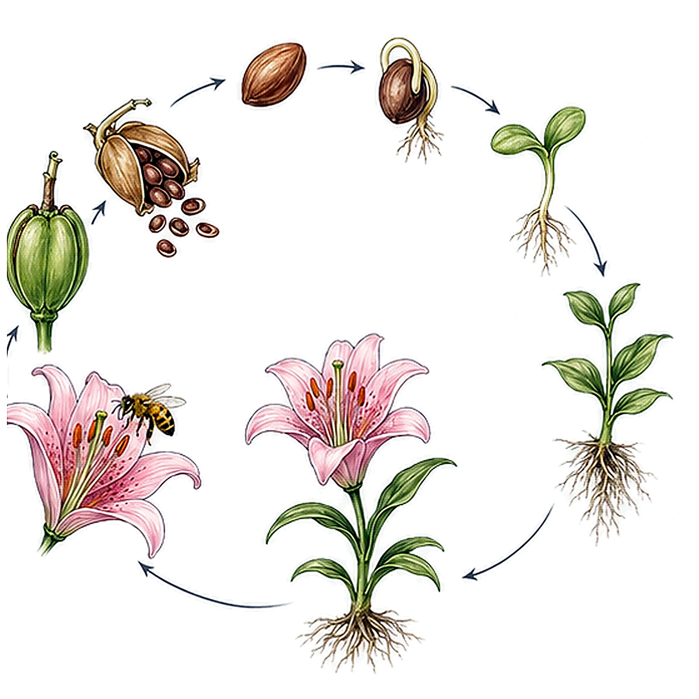
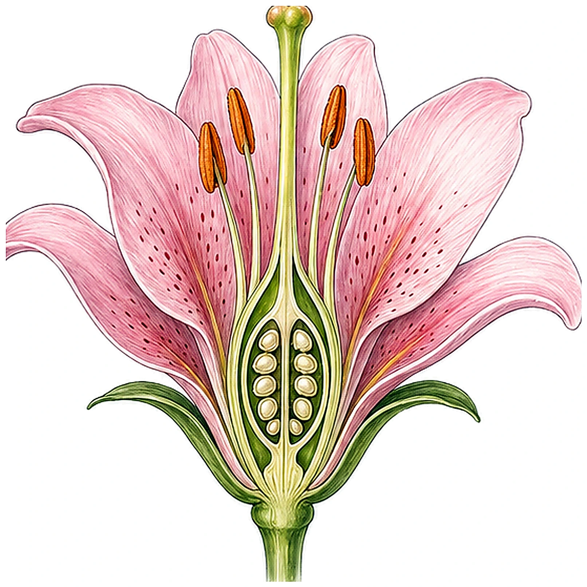
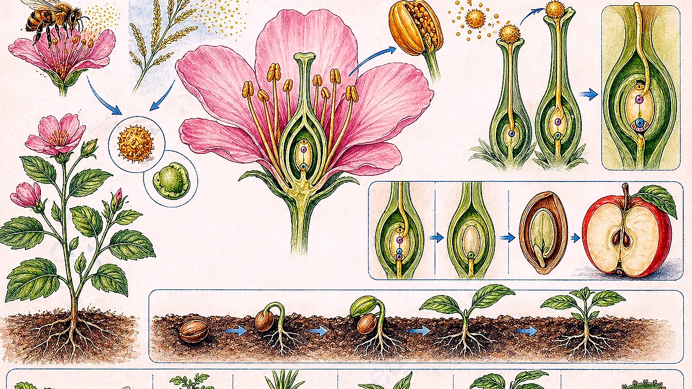
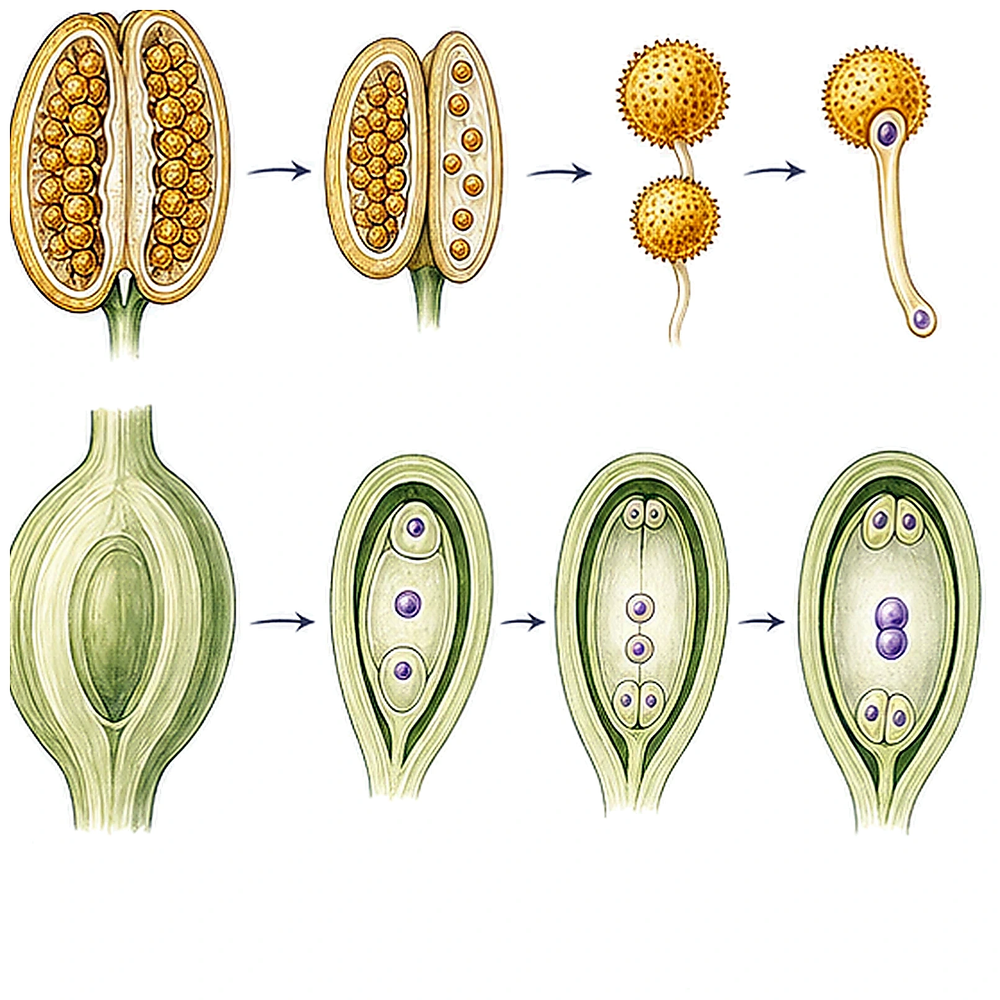
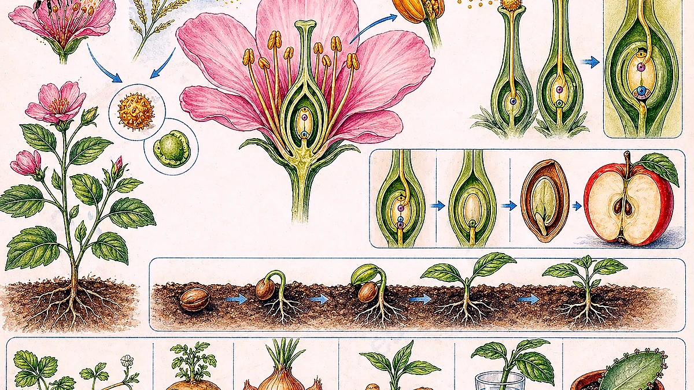
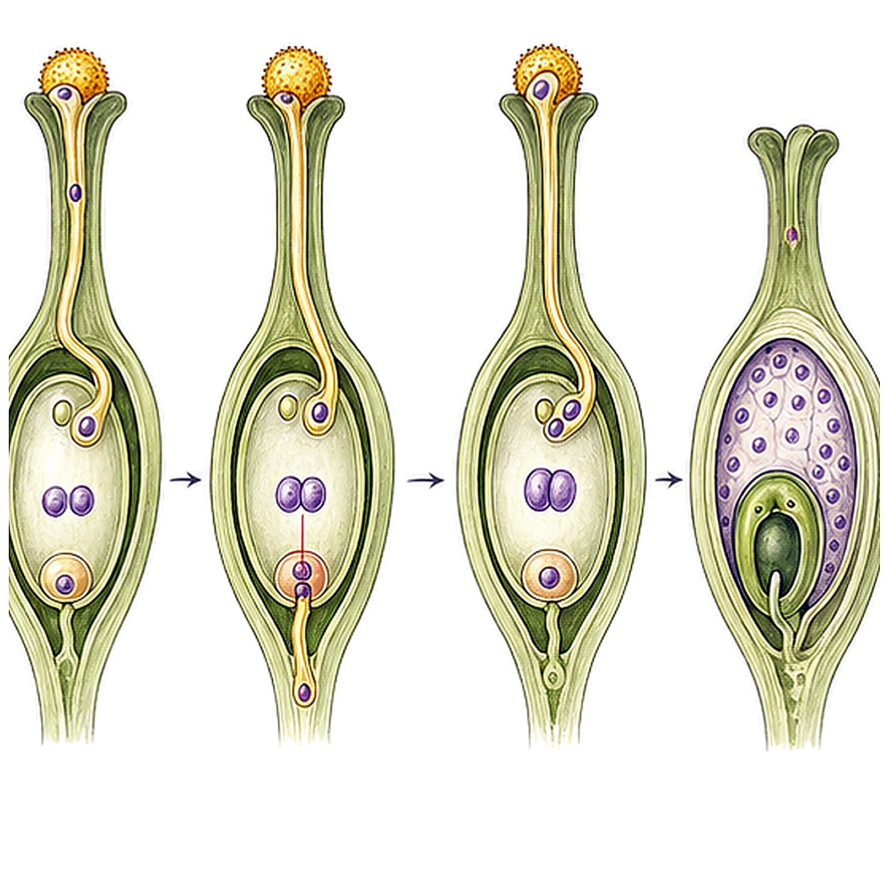
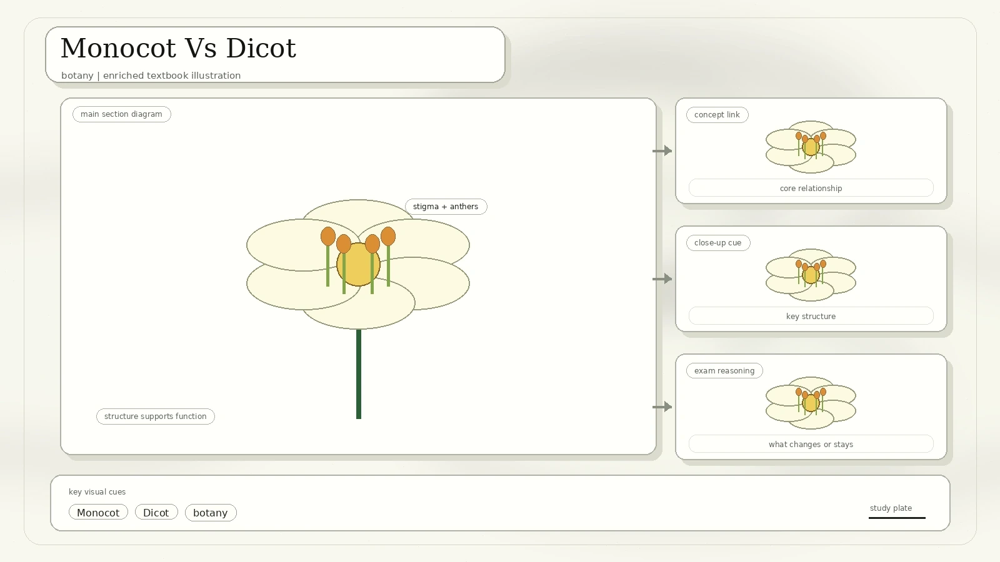
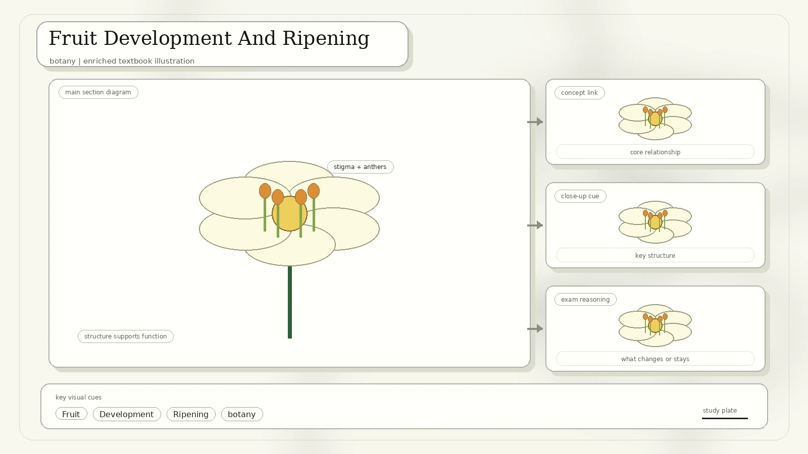
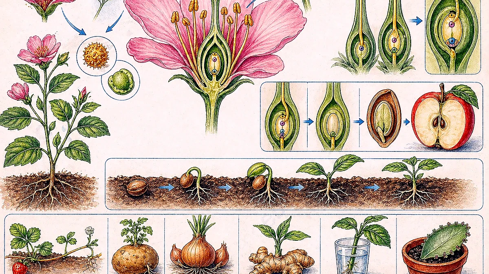

Plant Reproduction Has Two Big Strategies
The scan begins by separating sexual and asexual reproduction. Sexual reproduction uses spores, cones, flowers, gametes, seeds, or fruit depending on the plant group. Asexual reproduction makes a new plant from a parent body part, so the offspring is usually genetically identical to the parent.

New plants can arise from stems, shoots, leaves, or roots. Examples include runners, tubers, bulbs, cuttings, and plantlets.
Non-flowering plants may use spores or seeds in cones. Flowering plants use flowers to make seeds and fruit.
Regeneration, Meristems, And Callus Tissue
Plant development continues after the embryo stage. This post-embryonic growth is possible because plants keep regions of undifferentiated cells called meristems. These cells divide and produce new tissues throughout life.

| Growth Region | Where It Occurs | Result |
|---|---|---|
| Apical meristems | Tips of shoots and roots. | Primary growth: the plant gets longer and produces new leaves and flowers. |
| Lateral meristems | Cambium and other side-growing regions. | Secondary growth: stems and roots get wider, and trees can make bark and wood. |
| Callus | Forms over wounds or can be induced in tissue culture. | A mass of unorganised, undifferentiated cells that can regenerate new organs under the right conditions. |
Why regeneration matters: a potato tuber, ginger rhizome, strawberry runner, or leaf cutting can carry meristematic cells that restart growth and form a new plant.
Flowering Plant Life Cycle
The adult flowering plant is the diploid sporophyte. It produces flowers, which produce male and female gametophytes. After pollination and fertilisation, a zygote develops into an embryo inside a seed. The ovary becomes fruit, and the seed can germinate into a new sporophyte seedling.

The Structure Of A Flower
A typical flower is made of four whorls of modified leaves. From outside to inside, they are sepals, petals, stamens, and carpels. These are the floral organs students should identify during flower dissection.

| Organ | Role |
|---|---|
| Sepal | Protects the young flower bud. |
| Petal | Often attracts pollinators with colour, scent, or patterns. |
| Stamen | Male organ made of filament and anther; the anther produces pollen. |
| Carpel | Female organ made of stigma, style, ovary, and ovules. |
| Receptacle | Base of the flower where floral organs are attached. |
Male, Female, Bisexual, Monoecious, And Dioecious
A flower with both male and female sex organs is bisexual. A flower with only male organs or only female organs is unisexual. The scan also compares how plants arrange these flowers on the whole plant.

Each flower has both stamens and carpels.
Male and female flowers are separate, but both occur on the same plant.
Male flowers and female flowers occur on different plants.
How Male And Female Gametophytes Form
Flowering plants alternate between a visible diploid sporophyte stage and tiny haploid gametophytes. In this lesson, the male gametophyte is pollen. The female gametophyte is the embryo sac inside an ovule.
Diploid microsporocytes in the anther's pollen sacs undergo meiosis to form four haploid microspores. Each microspore divides by mitosis into a generative cell and a vegetative tube cell. Later, the generative cell forms two sperm cells.
A diploid megasporocyte in the ovule undergoes meiosis to form four haploid megaspores. Usually one survives. Its nucleus divides by mitosis three times, producing eight haploid nuclei that are partitioned into the embryo sac.

Pollination And Pollen Tube Growth
Pollination occurs when pollen released from anthers lands on a stigma. The pollen may be carried by wind, animals, water, or people. Once on a compatible stigma, a pollen grain produces a pollen tube that grows down the style into the ovary and discharges sperm into the embryo sac.

Flowers often use colour, scent, nectar, and sticky pollen to attract pollinators.
Flowers often release large amounts of light pollen that can be caught by feathery stigmas.
Some aquatic plants move pollen through water currents.
People can move pollen deliberately, sometimes after removing anthers to prevent unwanted selfing.
Self-Pollination, Cross-Pollination, And Avoiding Selfing
Self-pollination happens when pollen moves from an anther to the stigma of the same flower, or to another flower on the same plant. Cross-pollination happens when pollen from one plant lands on a flower of another plant.

It can produce seeds even when pollinators or nearby partners are scarce.
It increases genetic variation, which can improve adaptation and disease resistance.
| Mechanism | How It Reduces Self-Fertilisation |
|---|---|
| Different maturity times | Stamens and carpels mature at different times, so a flower's own pollen is not ready when its stigma is receptive. |
| Physical separation | Anthers and stigmas are positioned so pollen is more likely to be moved to another flower. |
| Self-incompatibility | Chemical recognition stops pollen from the same plant from fertilising its ovules. |
| Dioecious plants | Male and female flowers are on different plants, so self-fertilisation is impossible. |
Double Fertilisation
Flowering plants have a distinctive process called double fertilisation. After the pollen tube releases two sperm cells, two fusion events occur inside the embryo sac.

Why it is efficient: the food-storing endosperm develops only after fertilisation, so the plant does not waste resources on unfertilised ovules.
Monocot Vs Dicot
The scan compares monocotyledonous and dicotyledonous flowering plants. The easiest clues are cotyledon number, root type, leaf veins, vascular bundle arrangement, and flower-part number.

| Feature | Monocot | Dicot |
|---|---|---|
| Seed | One cotyledon. | Two cotyledons. |
| Root | Fibrous roots. | Tap root system. |
| Vascular bundles | Scattered in the stem. | Arranged in a ring. |
| Leaf veins | Parallel veins. | Net-like veins. |
| Flower parts | Usually in multiples of 3. | Usually in 4s or 5s. |
Fruit Development And Ripening
After fertilisation, the ovary or carpel starts transforming into a fruit. Different fruit types depend on how many carpels and flowers contribute to the mature fruit.

| Fruit Type | Scan Example | How It Forms |
|---|---|---|
| Simple fruit | Pea fruit | Develops from one ovary of one flower. |
| Aggregate fruit | Raspberry | Develops from many carpels in one flower. |
| Multiple fruit | Pineapple | Develops from many flowers in an inflorescence. |
| Accessory fruit | Apple | Includes tissues outside the ovary, especially the receptacle. |
Starch and acid contents decrease while sugar content increases, making fruit sweeter.
Alkaloids and tannins associated with under-ripe fruits begin to disappear.
Cell-wall materials break down, so the fruit becomes softer and aromatic compounds develop.
Ethylene, C2H4, is a gas known as the fruit-ripening hormone.
Seed Dispersal
Seed dispersal moves offspring away from the parent plant, reducing competition for light, water, minerals, and space. The scan groups dispersal by wind, expulsion, animals, and water.

Light seeds with wings or parachutes, such as maple and dandelion, can travel on air currents.
Pods such as lupin can split open and fling seeds away from the parent.
Fleshy fruits such as blackberry and tomato may be eaten. Hooked seeds such as burdock cling to fur or clothing. Acorns can be carried and buried.
Buoyant fruits or seeds such as coconut and some wetland seeds can float to new places.
What To Remember
Use timing, spatial separation, self-incompatibility, and dioecy as examples.
One sperm makes the zygote; the other makes the triploid endosperm with the polar nuclei.
Simple, aggregate, multiple, and accessory fruits each form from a different flower arrangement.
Use cotyledons, roots, veins, vascular bundles, and flower-part numbers.